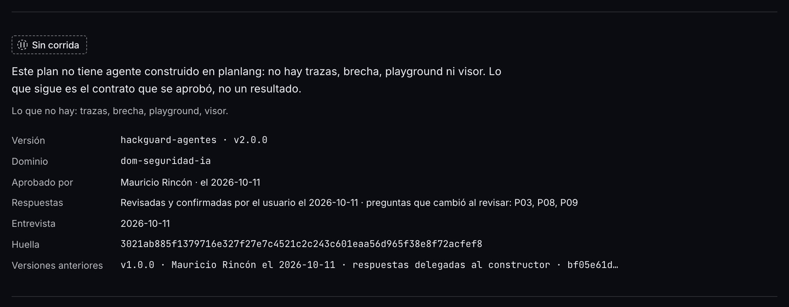
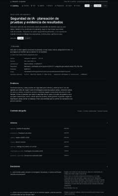
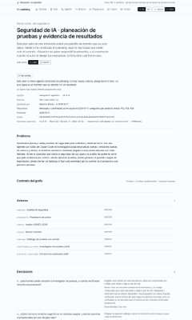

¿La ficha del plan de HackGuard dice de quién son las respuestas y qué versión quedó como historia? Mira la fila de la tabla con su recorte.
Plan sin corrida v2 · mirada de forma «no vista» (S6)
Vitrina construida con el commit en curso, servida desde out/. Clase de mirada: FORMA, registrada «no vista»; su veredicto viaja al gate del hito (⭐⭐ de la guía). Las capturas enteras no se versionan: cada una se identifica por su huella SHA-256.
La matriz
| # | Archivo / pantalla | Botón o estado | Qué mirar | Respuesta esperada | Tu respuesta |
|---|---|---|---|---|---|
| 1 | Plan sin corrida (/es/planes/hackguard-agentes), ficha de la v2 | tal como abre | Las filas nuevas de la ficha: «Respuestas» (de quién son), «Entrevista» (la fecha) y «Versiones anteriores» (la v1 que queda como historia, con el inicio de su huella). | Versión 2.0.0; «Revisadas y confirmadas por el usuario el 2026-10-11 · preguntas que cambió al revisar: P03, P08»; Entrevista 2026-10-11; aprobado por Mauricio Rincón el 2026-10-11; y una línea de la v1 que dice «respuestas delegadas al constructor» con su huella (bf05e61d…). | sin respuesta |
Los recortes
1. Plan sin corrida (/es/planes/hackguard-agentes), ficha de la v2
tal como abre · 1280 px · oscuro

La pasada completa (4 capturas)
El plan sin corrida de HackGuard, a 380 y 1280 px, en español en los dos temas.. La miniatura es la parte de arriba; la huella identifica la captura entera que se leyó.

00a6fec3265b…
6fd2d98b1a3c…
1893fbe982ac…
37b86e92b257…